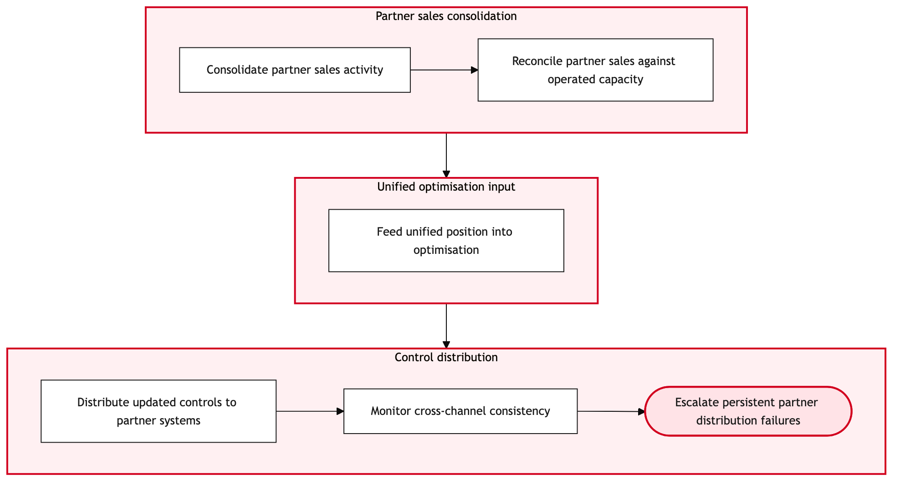

Updated 2026-08-20
Interline and Codeshare Inventory Control
Process flow
Click to zoom

Process steps
▼
Phase 1 — Demand Analysis
2 steps
| Step | Activity | Role | System | Input | Output | KPI | Dec | Exc | Pain point |
|---|---|---|---|---|---|---|---|---|---|
| 1.1 | Receive demand forecast updates | Revenue Manager | PROS Revenue ManagementB | Demand forecasts from CRM systems | Updated bid prices for interline/codeshare flights | Accuracy of demand forecasts (95%) | N | N | Inaccurate demand forecasts can lead to overbooking or underutilization. |
| 1.2 | Generate bid prices based on demand analysis | Revenue Manager | PROS Revenue ManagementB | Updated demand forecast data | Bid-price matrix for interline/codeshare flights | Time to generate bid prices (30 minutes) | N | Y | System crashes during bid price generation can cause delays. |
▼
Phase 2 — Revenue Management Bid-Price Generation
3 steps
| Step | Activity | Role | System | Input | Output | KPI | Dec | Exc | Pain point |
|---|---|---|---|---|---|---|---|---|---|
| 2.1 | Push bid prices to Amadeus Altea Inventory | Inventory Control Analyst | Amadeus Altea InventoryA | Bid-price matrix from PROS | Updated seat inventory and availability | Time to update inventory (5 minutes) | N | N | Network connectivity issues between systems can cause delays. |
| 2.2 | Monitor for synchronization errors between PROS and Amadeus | Inventory Control Analyst | Amadeus Altea InventoryA | Real-time inventory data from both systems | Error report if discrepancies found | Time to detect discrepancies (10 minutes) | Y | N | Manual reconciliation is time-consuming. |
| 2.3 | Initiate manual reconciliation process | Inventory Control Analyst | Amadeus Altea InventoryA | Error report from step 2.2 | Reconciled inventory data | Time to reconcile (1 hour) | N | Y | Manual reconciliation can introduce errors. |
▼
Phase 3 — Inventory Control
3 steps
| Step | Activity | Role | System | Input | Output | KPI | Dec | Exc | Pain point |
|---|---|---|---|---|---|---|---|---|---|
| 3.1 | Prepare fare filing data for ATPCO | Fare Filer | ATPCOB | Reconciled inventory data from Amadeus | Formatted fare filing data | Time to format data (20 minutes) | N | N | Data formatting errors can delay fare updates. |
| 3.2 | Submit fare filing request to ATPCO | Fare Filer | ATPCOB | Formatted fare filing data | Confirmation of receipt by ATPCO | Time to receive confirmation (15 minutes) | Y | N | ATPCO system can be slow, causing delays. |
| 3.3 | Monitor fare filing status with ATPCO | Fare Filer | ATPCOB | Confirmation of receipt from step 3.2 | Fare update status | Time to receive status (5 minutes) | N | Y | Status updates can be delayed, causing uncertainty. |
▼
Phase 4 — Fare Filing with ATPCO
3 steps
| Step | Activity | Role | System | Input | Output | KPI | Dec | Exc | Pain point |
|---|---|---|---|---|---|---|---|---|---|
| 4.1 | Attempt resubmission of fare filing request | Fare Filer | ATPCOB | Formatted fare filing data from step 3.3 | Confirmation of receipt by ATPCO | Time to receive confirmation (15 minutes) | Y | N | Repeated failures can lead to operational disruption. |
| 4.2 | Escalate fare filing issue to ATPCO support | Fare Filer | ATPCO SupportU | Details of failed fare filing request | Resolution from ATPCO support | Time to receive resolution (1 hour) | N | Y | Escalation can be time-consuming and may not always resolve quickly. |
| 4.3 | Update internal tracking with ATPCO support case ID | Fare Filer | Internal CRMU | Resolution from ATPCO support | Updated case status in CRM | Time to update CRM (10 minutes) | N | N | CRM system integration issues can cause delays. |
▼
Phase 5 — Monitoring and Adjustment
3 steps
| Step | Activity | Role | System | Input | Output | KPI | Dec | Exc | Pain point |
|---|---|---|---|---|---|---|---|---|---|
| 5.1 | Monitor for resolution of ATPCO support case | Fare Filer | Internal CRMU | Resolution status from step 4.3 | Resolved case status | Time to resolve (2 hours) | Y | N | Long resolution times can impact operations. |
| 5.2 | Escalate unresolved ATPCO support case to senior management | Senior Management | Internal CRMU | Details of unresolved ATPCO support case | Approval for escalation | Time to approve escalation (30 minutes) | Y | N | Manual intervention can be slow. |
| 5.3 | Take manual action to update fares based on ATPCO resolution | Fare Filer | Amadeus Altea InventoryA | Resolution details from step 5.2 | Updated seat inventory and availability | Time to update (1 hour) | N | Y | Manual updates can introduce errors. |
▼
Phase 6 — Exception Handling
2 steps
| Step | Activity | Role | System | Input | Output | KPI | Dec | Exc | Pain point |
|---|---|---|---|---|---|---|---|---|---|
| 6.1 | Notify relevant stakeholders of manual fare update | Senior Management | Internal Communication SystemU | Details of updated fares | Notification sent to stakeholders | Time to notify (30 minutes) | N | N | Communication delays can lead to misalignment. |
| 6.2 | Review and confirm fare updates with senior management | Senior Management | Internal CRMU | Notification from step 6.1 | Confirmation of review | Time to review (30 minutes) | N | Y | Manual reviews can be time-consuming. |
Swim lanes
Revenue Manager1.1 1.2
Inventory Control Analyst2.1 2.2 2.3
Fare Filer3.1 3.2 3.3 4.1 4.2 4.3 5.1 5.3
Senior Management5.2 6.1 6.2
Systems touched
PROS Revenue ManagementBAmadeus Altea InventoryAATPCOBATPCO SupportUInternal CRMUInternal Communication SystemU
Key performance indicators
- 95% accuracy in demand forecasts
- 30-minute average time to generate bid prices
- 5-minute average time to update inventory
- 15-minute average time to receive confirmation from ATPCO
- 2-hour average time to resolve ATPCO support cases
Risks and control points
- Inaccurate demand forecasts leading to overbooking or underutilization
- System crashes during bid price generation causing delays
- Network connectivity issues between systems affecting inventory updates
- Manual reconciliation errors introducing discrepancies
- Data formatting errors delaying fare updates
- ATPCO system slowness causing operational disruption
- Delayed status updates from ATPCO leading to uncertainty
- Repeated failures in fare filing requiring multiple resubmissions
Air Canada Process Wiki — process and systems reference compiled from public sources
for IT Application Management and User Support pre-sales discovery.
Built 2026-08-21. Every system carries an evidence tier: tier C is an industry pattern and tier U is an open
question, and neither should be asserted as fact about Air Canada without confirmation in discovery.
Not affiliated with or endorsed by Air Canada. Air Canada, Aeroplan and Altitude are trademarks of Air Canada.